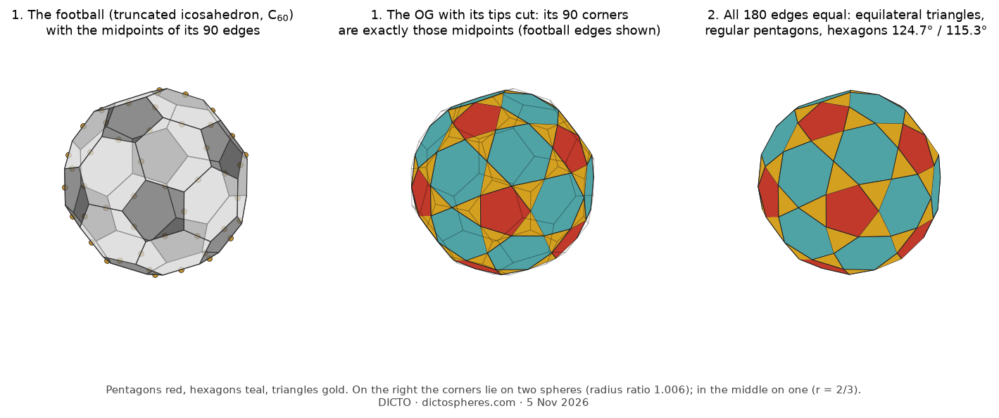
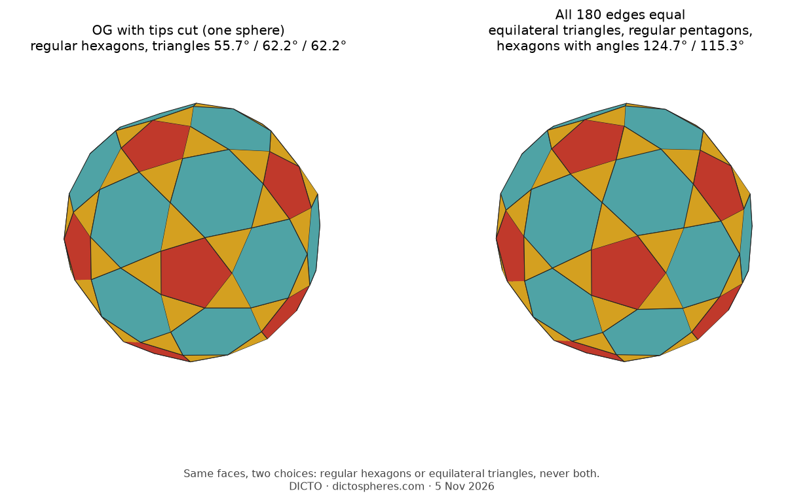
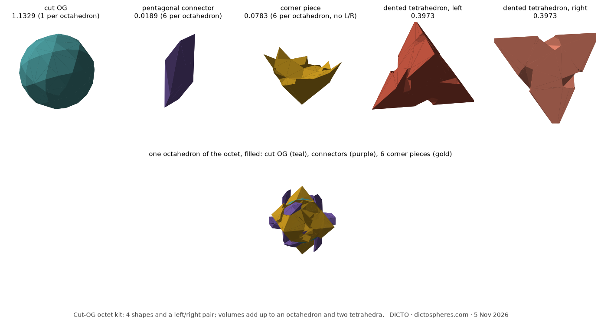

DICTO's proposal: a pentagon in the middle of each five-kite star. One flat cut at each of the 12 tips; what remains is the rectified truncated icosahedron. Destination: OG paper v5.
The 90 corners of the cut OG are exactly the edge midpoints of the truncated icosahedron (C60's bond centres); right: the all-equal-edge version. Destination: OG paper v5.

Same faces, two versions: on one sphere with regular hexagons, or all edges equal with equilateral triangles. Never both. Destination: OG paper v5.

DICTO's proposal: possible only by giving up mirror symmetry, so the solid comes as a left and a right. Destination: OG paper v5.

Four shapes and a left/right pair fill the octet: cut OG, pentagonal connector, corner piece, dented tetrahedra. The filled octahedron below is hard to read at this size. Destination: Bull-horns octet paper, next version.

The cut OG and one new adaptor fill space with two shapes (76.16% / 23.84%). Destination: Golden Bodhi Pyrochlore paper, next version.